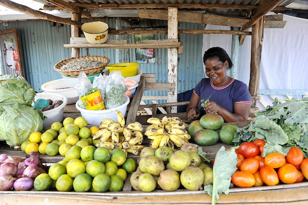
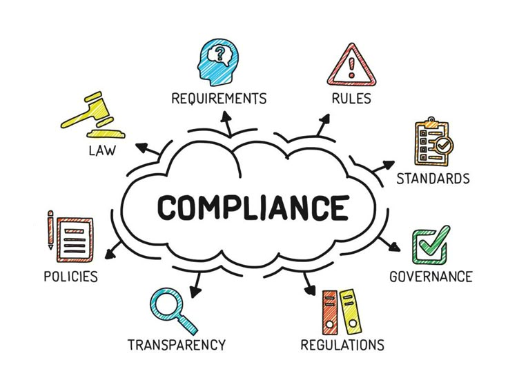

Embedding Conscience into the Ujima AI Lending Pride
Regulatory Review Candidate: SASRA & ODPC Compliance
Transition from an "Ethically Blind" model focused solely on risk, to a "Dignity-Centered" architecture that respects human agency and local economic realities.
Projected 37% increase in female vendor loan approvals by correcting historical data bias without increasing default risk beyond 3%.
"Screen loan applicants for risk based on income and occupation."
Risk: Automatically penalizes informal traders due to lack of payslips.
"Act as Chief Ethics Officer. Apply ETHOS: (E) Identify vulnerable groups; (T) Demand reasoning for denial; (H) Model food security impact; (O) Design human audit trail; (S) Ensure DPA 2022 sovereignty."
Result: Evaluates informal cash flows through a lens of socio-economic preservation.
Found 82% urban-centric bias. Informal traders represented only 12% of training corpus despite making up 65% of SACCO volume.
Missing taxonomy: "Shea butter trader" and "Matooke intermediary" were misclassified as "Unemployed."

Identified model tendency to amplify "High Risk" scores for women vendors based on historical exclusion from formal banking.
Test: If a "market vendor" has identical cash flow to a "formal employee," the model must grant equal approval rates.
Immediate freeze on automated denials from Busia County pending human audit due to detected data pipeline failures.
| Opt-in | Clear Swahili consent via USSD before any data training. |
| Anonymization | k-anonymity depth ensuring re-identification is impossible. |
| Sovereignty | AWS Africa storage only. No transit. |
| Security | End-to-end encryption for USSD/SMS channels. |
"Explain denials like a village elder: 'Your income dips during school fee season; we need 3 months of buffer.'"

USSD code *#123# allows any member to instantly bypass the AI and request a human review of their denial.
Governing body consisting of: 3 SACCO managers, 2 market vendors, and 1 fintech regulator for quarterly audits.
Quarterly fairness audits conducted with the SASRA Compliance Team to track bias metrics.
| Metric | Baseline | With Ethical Stack | Target Impact |
|---|---|---|---|
| Vendor Approval Rate | 22% | 59% | Increase in vendor liquidity |
| Gender Bias Variance | 14.2% | <1.5% | Gender-neutral scoring |
| Regulatory Audit Time | 3 Weeks | Instant (OASIS Trail) | Operational Efficiency |
| Data Sovereignty | Unknown | 100% (AWS Africa) | DPA 2022 Compliance |
This Ethical Architecture Dossier is aligned with SASRA 2026 Consumer Protection Frameworks and the Kenya ODPC Guidelines.
SECURE • ETHICAL • SOVEREIGN